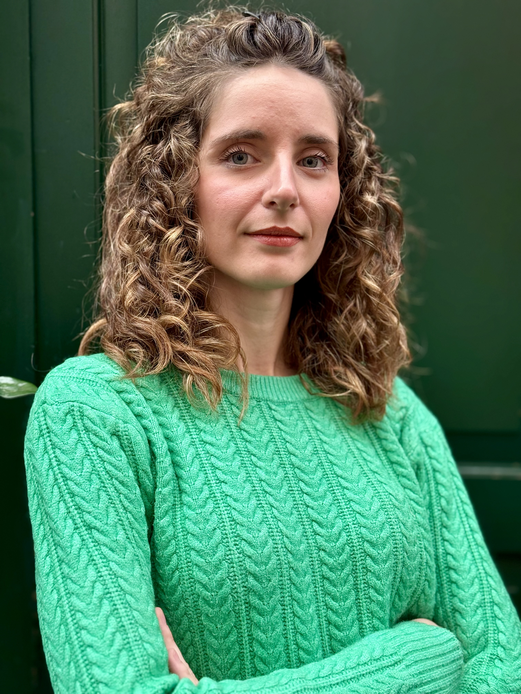

<!DOCTYPE html>
<html lang="it">
<head>
  <meta charset="UTF-8" />
  <meta name="viewport" content="width=device-width, initial-scale=1.0" />
  <title>Diana Camerini, Digital Marketing & Automation</title>
  <script src="https://unpkg.com/react@18/umd/react.development.js"></script>
  <script src="https://unpkg.com/react-dom@18/umd/react-dom.development.js"></script>
  <script src="https://unpkg.com/@babel/standalone/babel.min.js"></script>
  <link rel="preconnect" href="https://fonts.googleapis.com">
  <link rel="preconnect" href="https://fonts.gstatic.com" crossorigin>
  <link href="https://fonts.googleapis.com/css2?family=Playfair+Display:ital,wght@0,700;0,900;1,700&family=DM+Sans:wght@300;400;500&family=DM+Mono:wght@400;500&display=swap" rel="stylesheet">
  <style>
    *, *::before, *::after { box-sizing: border-box; margin: 0; padding: 0; }
    :root {
      --green-dark: #0d2418; --green-mid: #1a3a2a; --green-light: #2a5040;
      --mint: #3dffa0; --mint-dim: #1a7a4a;
      --white: #f5f2ec; --white-dim: rgba(245,242,236,0.6); --white-faint: rgba(245,242,236,0.1);
      --font-display: 'Playfair Display', serif; --font-body: 'DM Sans', sans-serif; --font-mono: 'DM Mono', monospace;
    }
    html { scroll-behavior: smooth; }
    body { background: var(--green-dark); color: var(--white); font-family: var(--font-body); font-weight: 300; line-height: 1.6; overflow-x: hidden; }
    ::selection { background: var(--mint); color: var(--green-dark); }
    ::-webkit-scrollbar { width: 4px; } ::-webkit-scrollbar-track { background: var(--green-dark); } ::-webkit-scrollbar-thumb { background: var(--mint); border-radius: 2px; }
    #root { min-height: 100vh; }
    @keyframes fadeUp { from { opacity: 0; transform: translateY(40px); } to { opacity: 1; transform: translateY(0); } }
    @keyframes fadeIn { from { opacity: 0; } to { opacity: 1; } }
    @keyframes float { 0%, 100% { transform: translateY(0px); } 50% { transform: translateY(-8px); } }
    @keyframes marquee { from { transform: translateX(0); } to { transform: translateX(-50%); } }
    @keyframes pulse { 0%, 100% { opacity: 1; } 50% { opacity: 0.4; } }
    .nav { position: fixed; top: 0; left: 0; right: 0; z-index: 100; display: flex; justify-content: space-between; align-items: center; padding: 24px 60px; background: rgba(13,36,24,0.85); backdrop-filter: blur(12px); border-bottom: 1px solid var(--white-faint); }
    .nav-logo { font-family: var(--font-display); font-size: 18px; font-weight: 700; color: var(--white); cursor: pointer; letter-spacing: -0.02em; }
    .nav-logo span { color: var(--mint); }
    .nav-links { display: flex; gap: 40px; align-items: center; }
    .nav-link { font-size: 13px; font-weight: 400; color: var(--white-dim); cursor: pointer; letter-spacing: 0.06em; text-transform: uppercase; transition: color 0.2s; background: none; border: none; }
    .nav-link:hover { color: var(--mint); }
    .nav-cta { font-size: 13px; font-weight: 500; color: var(--green-dark); background: var(--mint); border: none; padding: 10px 24px; border-radius: 2px; cursor: pointer; letter-spacing: 0.04em; transition: all 0.2s; }
    .nav-cta:hover { background: var(--white); transform: translateY(-1px); }
    .hero { min-height: 100vh; display: flex; flex-direction: column; justify-content: center; padding: 140px 60px 80px; position: relative; overflow: hidden; }
    .hero::before { content: ''; position: absolute; top: -200px; right: -200px; width: 700px; height: 700px; background: radial-gradient(circle, rgba(61,255,160,0.06) 0%, transparent 70%); pointer-events: none; }
    .hero::after { content: ''; position: absolute; bottom: -100px; left: -100px; width: 400px; height: 400px; background: radial-gradient(circle, rgba(61,255,160,0.04) 0%, transparent 70%); pointer-events: none; }
    .hero-badge { display: inline-flex; align-items: center; gap: 8px; font-family: var(--font-mono); font-size: 12px; color: var(--mint); letter-spacing: 0.1em; margin-bottom: 32px; opacity: 0; animation: fadeUp 0.6s ease 0.1s forwards; }
    .hero-badge::before { content: ''; display: inline-block; width: 6px; height: 6px; background: var(--mint); border-radius: 50%; animation: pulse 2s infinite; }
    .hero-title { font-family: var(--font-display); font-size: clamp(52px, 7vw, 96px); font-weight: 900; line-height: 1.0; letter-spacing: -0.03em; color: var(--white); max-width: 900px; margin-bottom: 12px; opacity: 0; animation: fadeUp 0.8s ease 0.2s forwards; }
    .hero-title .arrow { color: var(--mint); font-style: italic; }
    .hero-subtitle { font-family: var(--font-display); font-size: clamp(18px, 2.5vw, 28px); font-weight: 700; font-style: italic; color: var(--white-dim); max-width: 700px; margin-bottom: 32px; line-height: 1.3; opacity: 0; animation: fadeUp 0.8s ease 0.35s forwards; }
    .hero-body { font-size: 16px; color: var(--white-dim); max-width: 560px; line-height: 1.7; margin-bottom: 48px; opacity: 0; animation: fadeUp 0.8s ease 0.45s forwards; }
    .hero-actions { display: flex; gap: 16px; flex-wrap: wrap; opacity: 0; animation: fadeUp 0.8s ease 0.55s forwards; }
    .btn-primary { display: inline-flex; align-items: center; gap: 8px; background: var(--mint); color: var(--green-dark); font-family: var(--font-body); font-size: 14px; font-weight: 500; padding: 14px 28px; border: none; border-radius: 2px; cursor: pointer; letter-spacing: 0.02em; transition: all 0.2s; text-decoration: none; }
    .btn-primary:hover { background: var(--white); transform: translateY(-2px); box-shadow: 0 8px 24px rgba(61,255,160,0.2); }
    .btn-secondary { display: inline-flex; align-items: center; gap: 8px; background: transparent; color: var(--white); font-family: var(--font-body); font-size: 14px; font-weight: 400; padding: 14px 28px; border: 1px solid rgba(245,242,236,0.25); border-radius: 2px; cursor: pointer; letter-spacing: 0.02em; transition: all 0.2s; text-decoration: none; }
    .btn-secondary:hover { border-color: var(--mint); color: var(--mint); transform: translateY(-2px); }
    .hero-scroll { position: absolute; bottom: 40px; left: 60px; display: flex; align-items: center; gap: 12px; font-family: var(--font-mono); font-size: 11px; color: var(--white-dim); letter-spacing: 0.08em; opacity: 0; animation: fadeIn 1s ease 1s forwards; }
    .hero-scroll-line { width: 40px; height: 1px; background: var(--mint); animation: float 3s ease-in-out infinite; }
    .marquee-section { border-top: 1px solid var(--white-faint); border-bottom: 1px solid var(--white-faint); padding: 18px 0; overflow: hidden; background: var(--green-mid); }
    .marquee-track { display: flex; white-space: nowrap; animation: marquee 20s linear infinite; }
    .marquee-item { display: inline-flex; align-items: center; gap: 20px; padding: 0 40px; font-family: var(--font-mono); font-size: 12px; letter-spacing: 0.1em; color: var(--white-dim); text-transform: uppercase; }
    .marquee-dot { color: var(--mint); font-size: 16px; }
    .section { padding: 100px 60px; }
    .section-label { font-family: var(--font-mono); font-size: 11px; letter-spacing: 0.15em; color: var(--mint); text-transform: uppercase; margin-bottom: 20px; display: flex; align-items: center; gap: 12px; }
    .section-label::after { content: ''; display: block; width: 40px; height: 1px; background: var(--mint); }
    .section-title { font-family: var(--font-display); font-size: clamp(36px, 5vw, 64px); font-weight: 900; line-height: 1.05; letter-spacing: -0.03em; color: var(--white); margin-bottom: 20px; }
    .section-title em { color: var(--mint); font-style: italic; }
    .value-section { padding: 100px 60px; background: var(--green-mid); position: relative; overflow: hidden; }
    .value-section::before { content: '"'; position: absolute; top: -60px; right: 40px; font-family: var(--font-display); font-size: 400px; color: rgba(61,255,160,0.04); line-height: 1; pointer-events: none; }
    .value-text { font-family: var(--font-display); font-size: clamp(22px, 3vw, 36px); font-weight: 700; line-height: 1.4; color: var(--white); max-width: 800px; }
    .value-text strong { color: var(--mint); font-style: italic; }
    .cases-grid { display: grid; grid-template-columns: 1fr; gap: 2px; margin-top: 60px; }
    .case-card { background: var(--green-mid); padding: 48px 52px; cursor: pointer; transition: all 0.3s; position: relative; overflow: hidden; border-left: 3px solid transparent; }
    .case-card::before { content: ''; position: absolute; top: 0; left: 0; right: 0; bottom: 0; background: rgba(61,255,160,0.03); opacity: 0; transition: opacity 0.3s; }
    .case-card:hover { border-left-color: var(--mint); transform: translateX(4px); }
    .case-card:hover::before { opacity: 1; }
    .case-num { font-family: var(--font-mono); font-size: 11px; color: var(--mint); letter-spacing: 0.1em; margin-bottom: 16px; }
    .case-title { font-family: var(--font-display); font-size: clamp(24px, 3vw, 36px); font-weight: 900; line-height: 1.1; letter-spacing: -0.02em; color: var(--white); margin-bottom: 16px; }
    .case-hook { font-size: 15px; font-weight: 500; color: var(--mint); margin-bottom: 16px; letter-spacing: -0.01em; }
    .case-body { font-size: 15px; color: var(--white-dim); line-height: 1.7; max-width: 680px; margin-bottom: 28px; }
    .case-link { display: inline-flex; align-items: center; gap: 8px; font-family: var(--font-mono); font-size: 12px; color: var(--mint); letter-spacing: 0.08em; text-transform: uppercase; background: none; border: none; cursor: pointer; padding: 0; transition: gap 0.2s; }
    .case-link:hover { gap: 16px; }
    .case-tag { display: inline-block; font-family: var(--font-mono); font-size: 10px; letter-spacing: 0.1em; text-transform: uppercase; color: var(--green-dark); background: var(--mint); padding: 4px 10px; border-radius: 2px; margin-right: 8px; margin-bottom: 20px; }
    .skills-section { padding: 100px 60px; background: var(--green-dark); }
    .skills-grid { display: grid; grid-template-columns: repeat(2, 1fr); gap: 2px; margin-top: 60px; }
    .skill-card { background: var(--green-mid); padding: 40px 44px; transition: background 0.3s; }
    .skill-card:hover { background: var(--green-light); }
    .skill-card-title { font-family: var(--font-display); font-size: 22px; font-weight: 700; color: var(--white); margin-bottom: 20px; letter-spacing: -0.02em; }
    .skill-list { list-style: none; }
    .skill-list li { font-size: 14px; color: var(--white-dim); padding: 8px 0; border-bottom: 1px solid var(--white-faint); display: flex; align-items: center; gap: 10px; }
    .skill-list li::before { content: '→'; color: var(--mint); font-size: 12px; flex-shrink: 0; }
    .skill-list li:last-child { border-bottom: none; }
    .tools-section { padding: 60px 60px 100px; background: var(--green-dark); }
    .tools-label { font-family: var(--font-mono); font-size: 11px; letter-spacing: 0.15em; color: var(--mint); text-transform: uppercase; margin-bottom: 40px; display: flex; align-items: center; gap: 12px; }
    .tools-label::after { content: ''; display: block; flex: 1; height: 1px; background: var(--white-faint); }
    .tools-grid { display: grid; grid-template-columns: repeat(4, 1fr); gap: 2px; }
    .tool-card { background: var(--green-mid); padding: 32px 36px; }
    .tool-card-title { font-family: var(--font-mono); font-size: 11px; letter-spacing: 0.1em; text-transform: uppercase; color: var(--mint); margin-bottom: 20px; }
    .tool-list { list-style: none; }
    .tool-list li { font-size: 13px; color: var(--white-dim); padding: 5px 0; }
    .about-section { padding: 100px 60px; background: var(--green-mid); display: grid; grid-template-columns: 1fr 1fr; gap: 80px; align-items: center; }
    .about-title { font-family: var(--font-display); font-size: clamp(40px, 5vw, 72px); font-weight: 900; line-height: 1.0; letter-spacing: -0.03em; color: var(--white); margin-bottom: 32px; }
    .about-title em { color: var(--mint); font-style: italic; }
    .about-body { font-size: 16px; color: var(--white-dim); line-height: 1.8; }
    .about-body p + p { margin-top: 20px; }
    .cta-section { padding: 120px 60px; background: var(--green-dark); text-align: center; position: relative; overflow: hidden; }
    .cta-section::before { content: ''; position: absolute; top: 50%; left: 50%; transform: translate(-50%, -50%); width: 600px; height: 600px; background: radial-gradient(circle, rgba(61,255,160,0.06) 0%, transparent 70%); pointer-events: none; }
    .cta-title { font-family: var(--font-display); font-size: clamp(36px, 5vw, 64px); font-weight: 900; line-height: 1.05; letter-spacing: -0.03em; color: var(--white); max-width: 700px; margin: 0 auto 20px; }
    .cta-title em { color: var(--mint); font-style: italic; }
    .cta-body { font-size: 16px; color: var(--white-dim); max-width: 560px; margin: 0 auto 48px; line-height: 1.7; }
    .cta-actions { display: flex; gap: 16px; justify-content: center; flex-wrap: wrap; }
    .footer { padding: 32px 60px; border-top: 1px solid var(--white-faint); display: flex; justify-content: space-between; align-items: center; background: var(--green-dark); }
    .footer-name { font-family: var(--font-display); font-size: 16px; font-weight: 700; color: var(--white-dim); }
    .footer-copy { font-family: var(--font-mono); font-size: 11px; color: rgba(245,242,236,0.3); letter-spacing: 0.06em; }
    .case-page { min-height: 100vh; padding: 140px 60px 100px; max-width: 860px; margin: 0 auto; }
    .case-page-back { display: inline-flex; align-items: center; gap: 8px; font-family: var(--font-mono); font-size: 12px; color: var(--mint); letter-spacing: 0.08em; text-transform: uppercase; background: none; border: none; cursor: pointer; padding: 0; margin-bottom: 60px; transition: gap 0.2s; }
    .case-page-back:hover { gap: 16px; }
    .case-page-label { font-family: var(--font-mono); font-size: 11px; color: var(--mint); letter-spacing: 0.15em; text-transform: uppercase; margin-bottom: 16px; }
    .case-page-title { font-family: var(--font-display); font-size: clamp(40px, 6vw, 72px); font-weight: 900; line-height: 1.0; letter-spacing: -0.03em; color: var(--white); margin-bottom: 24px; }
    .case-page-subtitle { font-size: 18px; color: var(--mint); font-weight: 500; line-height: 1.5; margin-bottom: 60px; max-width: 680px; }
    .case-page-divider { height: 1px; background: var(--white-faint); margin: 48px 0; }
    .case-section-label { font-family: var(--font-mono); font-size: 10px; letter-spacing: 0.15em; text-transform: uppercase; color: var(--mint); margin-bottom: 20px; }
    .case-section-body { font-size: 16px; color: var(--white-dim); line-height: 1.8; }
    .case-section-body p + p { margin-top: 16px; }
    .case-bullet-list { list-style: none; margin-top: 16px; }
    .case-bullet-list li { font-size: 15px; color: var(--white-dim); padding: 8px 0 8px 20px; position: relative; border-bottom: 1px solid var(--white-faint); line-height: 1.6; }
    .case-bullet-list li:last-child { border-bottom: none; }
    .case-bullet-list li::before { content: '—'; position: absolute; left: 0; color: var(--mint); }
    .mrk-metrics { display: grid; grid-template-columns: repeat(4, 1fr); gap: 2px; margin: 32px 0; }
    .mrk-metric { background: var(--green-light); padding: 20px 24px; }
    .mrk-metric-val { font-family: var(--font-display); font-size: 28px; font-weight: 900; color: var(--mint); letter-spacing: -0.02em; line-height: 1; margin-bottom: 6px; }
    .mrk-metric-label { font-size: 12px; color: var(--white-dim); line-height: 1.4; }
    .mrk-highlight { border-left: 2px solid var(--mint); padding: 16px 20px; margin: 24px 0; background: rgba(61,255,160,0.04); }
    .mrk-highlight p { font-size: 14px; color: var(--mint); line-height: 1.6; margin: 0; }
    .mrk-identity-grid { display: grid; grid-template-columns: repeat(3, 1fr); gap: 2px; margin: 24px 0; }
    .mrk-identity-card { background: var(--green-light); padding: 24px 28px; }
    .mrk-identity-label { font-family: var(--font-mono); font-size: 10px; letter-spacing: 0.1em; text-transform: uppercase; color: var(--mint); margin-bottom: 8px; }
    .mrk-identity-title { font-size: 14px; font-weight: 500; color: var(--white); margin-bottom: 8px; }
    .mrk-identity-body { font-size: 13px; color: var(--white-dim); line-height: 1.55; }
    .mrk-posts { display: grid; grid-template-columns: repeat(3, 1fr); gap: 2px; margin: 24px 0; }
    .mrk-post { background: var(--green-light); padding: 20px 24px; }
    .mrk-post-title { font-family: var(--font-mono); font-size: 11px; color: var(--mint); letter-spacing: 0.06em; margin-bottom: 8px; }
    .mrk-post-desc { font-size: 13px; color: var(--white-dim); margin-bottom: 10px; line-height: 1.4; }
    .mrk-post-stats { font-size: 12px; color: rgba(245,242,236,0.4); line-height: 1.7; }
    .mrk-post-stats b { color: var(--white-dim); font-weight: 400; }
    .mrk-success { border-left: 2px solid var(--mint-dim); padding: 16px 20px; margin: 24px 0; background: rgba(26,122,74,0.15); }
    .mrk-success p { font-size: 14px; color: rgba(61,255,160,0.7); line-height: 1.6; margin: 0; }
    @media (max-width: 768px) {
      .nav { padding: 20px 24px; } .nav-links { display: none; } .hero { padding: 120px 24px 60px; } .section { padding: 60px 24px; } .value-section { padding: 60px 24px; } .skills-section { padding: 60px 24px; } .tools-section { padding: 40px 24px 60px; } .skills-grid { grid-template-columns: 1fr; } .tools-grid { grid-template-columns: repeat(2, 1fr); } .about-section { grid-template-columns: 1fr; padding: 60px 24px; gap: 40px; } .cta-section { padding: 80px 24px; } .footer { padding: 24px; flex-direction: column; gap: 12px; text-align: center; } .case-card { padding: 32px 28px; } .case-page { padding: 120px 24px 60px; } .mrk-metrics { grid-template-columns: repeat(2, 1fr); } .mrk-identity-grid { grid-template-columns: 1fr; } .mrk-posts { grid-template-columns: 1fr; }
    }
  </style>
</head>
<body>
  <div id="root"></div>
  <script type="text/babel">
    const { useState, useEffect } = React;

    const caseStudies = [
      {
        id: 'infissi', num: '01', tag: 'CRM · GoHighLevel',
        title: 'CRM B2B e B2C\nProduzione infissi',
        hook: '50 showroom. Una sede centrale. Nessun lead perso.',
        body: "Un'azienda di infissi con una rete commerciale frammentata: ogni showroom lavorava in autonomia, i lead sparivano tra un passaggio e l'altro e la sede non aveva visibilità su nulla. Ho progettato e configurato un CRM su GoHighLevel che ha collegato l'intera rete in un unico sistema, con pipeline condivise, automazioni di follow-up e reportistica in tempo reale.",
        full: {
          subtitle: "Come ho trasformato la gestione dei lead di un'azienda di infissi con GoHighLevel: da 50 showroom fuori controllo a un sistema automatizzato.",
          sfide: { label: "Le sfide · Informazioni disperse, lead persi, nessun controllo", body: "La comunicazione interna era frammentata e affidata all'iniziativa dei singoli. Gli showroom e gli agenti contattavano la sede senza una logica condivisa, i lead entravano nel processo commerciale e sparivano senza che nessuno se ne accorgesse in tempo. Nessun sistema di monitoraggio, nessuna visibilità sulle fasi di avanzamento, nessuna struttura che garantisse continuità al percorso del cliente. Il risultato? Opportunità mancate, follow-up saltati e una sede centrale che operava sostanzialmente alla cieca sulla propria rete di vendita." },
          approccio: { label: "L'approccio · Analisi, progettazione e automazione", body: "Il primo passo è stato mappare la customer journey esistente: identificare i touchpoint critici, i punti di dispersione dei lead e i momenti in cui la comunicazione tra agenti, showroom e sede si interrompeva. Da quella analisi ho progettato una pipeline multi-stage su GoHighLevel, costruita per seguire il lead in ogni fase senza stravolgere i processi già in uso, ma collegandoli finalmente in un unico sistema automatizzato.", items: ["Notifiche real-time via WhatsApp e email per agenti e showroom, attivate automaticamente a ogni cambio di stato del lead", "Sistema di reportistica automatica, generato dalle azioni degli agenti e degli showroom, per dare alla sede una visione chiara e aggiornata in tempo reale", "Nurturing personalizzato per ogni fase del funnel e per ogni tipologia di lead, inclusi i contatti che non avevano ancora acquistato", "Follow-up automatizzati per recuperare i lead in stallo senza intervento manuale", "Survey post-vendita, progettato per raccogliere dati utili allo sviluppo commerciale e alla qualità del servizio"] },
          risultati: { label: "I risultati · Controllo, visibilità e lead al sicuro", body: "Nessun lead registrato viene più perso. La pipeline traccia ogni contatto in ogni fase, rendendo possibile qualsiasi intervento correttivo prima che sia troppo tardi. La sede ha oggi visibilità completa sull'operato di tutti gli showroom e degli agenti, coordinati in modo automatizzato da un unico punto di controllo. La reportistica è chiara, strutturata e allineata agli obiettivi aziendali. Il nurturing è personalizzato per fase e per intenzione d'acquisto. In sintesi un sistema che non ha cambiato le persone, ma ha cambiato il modo in cui le informazioni circolano tra di loro, eliminando la dispersione e restituendo controllo a chi deve prendere decisioni." }
        }
      },
      {
        id: 'sanita', num: '02', tag: 'CRM · Sanità · Privacy',
        title: 'CRM B2C\nSanità',
        hook: 'Ogni chiamata tracciata. Zero dati persi. Privacy garantita.',
        body: "Una struttura sanitaria riceveva chiamate da campagne Google Ads senza riuscire a tracciarle. Nessun dato affidabile, nessuna visibilità sulle conversioni, decisioni di budget prese alla cieca. Ho costruito un sistema di tracking completo su GoHighLevel integrato con Slack, progettato fin dall'inizio per essere conforme alla privacy, senza rinunciare all'efficienza operativa.",
        full: {
          subtitle: "Come ho costruito un sistema di tracking delle chiamate conforme alla privacy con GoHighLevel e Slack.",
          sfide: { label: "Le sfide · Dati inaffidabili, conversioni invisibili", body: "Le chiamate in entrata provenienti dalle campagne Google Ads non venivano tracciate. I dati forniti dall'agenzia pubblicitaria non corrispondevano ai dati interni della struttura, rendendo impossibile qualsiasi analisi affidabile delle performance per canale. Il risultato era una reportistica approssimativa che costringeva l'azienda a prendere decisioni strategiche e di budget, senza avere una visione reale di cosa generasse conversioni. Un problema tanto più delicato in un settore dove la relazione con il paziente richiede precisione, continuità e riservatezza." },
          approccio: { label: "L'approccio · Analisi del flusso dati e progettazione del sistema", body: "Ho iniziato dalla mappatura dei processi esistenti: studiare il flusso dati già in uso per identificare esattamente dove le informazioni si perdevano. Il punto critico era preciso: le chiamate in entrata non alimentavano nessun sistema strutturato. Ho progettato la soluzione intorno a questo nodo.", items: ["Pipeline dedicata su GoHighLevel, costruita per raccogliere e tracciare ogni contatto telefonico in entrata, dalla prima chiamata all'esito finale", "Integrazione con Slack per le notifiche al team interno, il canale più rapido e già in uso dalla struttura, scelto per ridurre l'attrito nell'adozione del nuovo sistema", "Form dinamico con link diretto, condiviso via Slack, per permettere al team di registrare immediatamente ogni chiamata con i dati essenziali, senza passaggi ridondanti", "Trigger condizionali per ogni esito, che attivano automaticamente le automazioni successive in base all'esito registrato dal team", "Zero comunicazioni automatiche verso i pazienti, una scelta progettuale precisa, non un limite. In ambito sanitario la gestione dei dati personali richiede un approccio su misura"] },
          risultati: { label: "Impatto e risultati", body: "Nessuna chiamata in entrata viene più persa o ignorata. Ogni contatto viene registrato, tracciato e inserito nella pipeline, con un esito documentato che alimenta la reportistica automatica. Il team viene notificato in tempo reale ogni volta che è necessario un intervento, mantenendo la comunicazione interna fluida senza aggiungere complessità operative. La reportistica generata automaticamente dagli esiti dei contatti offre alla struttura una visione chiara e affidabile delle performance per canale, per fase e per tipologia di paziente. Finalmente i dati interni e quelli dell'agenzia parlano la stessa lingua. La privacy dei pazienti è garantita in ogni fase del processo." }
        }
      },
      {
        id: 'fotovoltaico', num: '03', tag: 'Outreach · Lemlist · B2B',
        title: 'Campagna Lemlist\nFotovoltaico',
        hook: 'Da zero contatti a lead qualificati in 30 giorni.',
        body: "Quattro mesi di campagna LinkedIn senza risultati: database non segmentato, copy generico, follow-up fuori tempo. Ho ricostruito tutto da zero, segmentazione, copy, sequenze, A/B test, usando Lemlist come piattaforma di outreach multicanale. In un mese i primi lead qualificati, due sopralluoghi confermati, un database finalmente utilizzabile.",
        full: {
          subtitle: "Da zero contatti in 4 mesi a lead qualificati in 30 giorni: come ho rilanciato la campagna outreach B2B di un'azienda fotovoltaica con Lemlist.",
          sfide: { label: "Le sfide · Una campagna che non parlava alle persone giuste", body: "La campagna LinkedIn esistente soffriva di tre problemi fondamentali che si alimentavano a vicenda: un database non segmentato, copy non ottimizzati e tempistiche di follow-up troppo dilatate. I lead contattati non erano profilati, il che significa che il messaggio giusto stava raggiungendo le persone sbagliate. I tempi di risposta erano lenti e i copy non erano costruiti per generare engagement. Il risultato dopo quattro mesi era impietoso: zero contatti, zero opportunità commerciali, budget e tempo investiti senza ritorno." },
          approccio: { label: "L'approccio · Metodo, segmentazione e ottimizzazione continua", body: "Il primo passo è stato un'analisi completa della campagna esistente: touchpoint critici, copy utilizzati, sequenze di comunicazione e tempistiche. Solo dopo aver capito dove e perché il processo si rompeva ho iniziato a intervenire. Lemlist è lo strumento scelto per reimpostare l'intera campagna, una piattaforma di outreach multicanale che permette di gestire sequenze personalizzate via email e LinkedIn, monitorare le metriche in tempo reale e ottimizzare ogni variabile della comunicazione in modo iterativo.", items: ["Ricostruzione del database da zero, segmentato per settore, area geografica, dimensione aziendale e posizione lavorativa dei contatti", "Riscrittura completa del copy di email e messaggi LinkedIn, con un linguaggio calibrato sul profilo del destinatario e un'offerta di valore chiara e immediata", "A/B test sistematici su subject line e CTA, per identificare in tempo reale quali varianti generavano più aperture e più risposte", "Riduzione dei tempi tra una comunicazione e l'altra, per mantenere alta l'attenzione dei lead senza risultare invasivi"] },
          risultati: { label: "I risultati · Da zero a lead qualificati in un mese", body: "Il confronto con la situazione di partenza è la misura più onesta del risultato: da zero contatti in quattro mesi a quattro lead qualificati in trenta giorni. Tutti e quattro i lead hanno richiesto l'analisi di fattibilità gratuita, il che significa che non erano contatti generici, ma aziende realmente interessate al servizio. Due di questi contatti si sono trasformati in sopralluoghi confermati. L'open rate e il reply rate della campagna sono stati ottimizzati in modo significativo. Il database costruito rappresenta oggi un asset strategico per l'azienda, segmentato, profilato e pronto per alimentare campagne future senza ripartire da zero." }
        }
      },
      {
        id: 'mrk', num: '04', tag: 'Social Media · Brand Identity · B2C',
        title: 'MRK Haircare\nSocial media management',
        hook: 'Nessun follower. Nessuna storia. Nessun budget.',
        body: "Un salone appena aperto nella zona più competitiva di Roma: oltre 100 parrucchieri nelle directory locali, zero presenza online. Ho costruito l'identità digitale da zero, tone of voice, brand identity visiva, posizionamento, e impostato una strategia editoriale fondata sull'educazione come leva di fiducia. In 5,5 mesi, 27.600 account raggiunti con soli contenuti organici.",
        full: { isMRK: true }
      }
    ];

    const skills = [
      { title: 'Analisi e strategia', items: ['Ricerca di mercato e competitor', 'Buyer personas e segmentazione', 'Funnel e customer journey'] },
      { title: 'Advertising', items: ['Meta Ads', 'Google Ads', 'Retargeting e ottimizzazione budget'] },
      { title: 'Content e Copywriting', items: ['Copywriting e storytelling', 'Content strategy', 'Email marketing'] },
      { title: 'Analytics e Data', items: ['Power BI', 'Microsoft Office', 'Power2Retail', 'XY Retail'] },
    ];

    const tools = [
      { title: 'Acquisition & Management', items: ['Go High Level', 'Salesforce', 'Slack', 'Discord', 'Telegram', 'Lemlist'] },
      { title: 'Automation & AI', items: ['n8n', 'Claude', 'Chat GPT', 'Gemini', 'Gamma', 'MCP Servers'] },
      { title: 'Content Creation', items: ['Capcut', 'Canva', 'Loom', 'Square Space', 'Wordpress', 'Framer'] },
      { title: 'Data & Development', items: ['Airtable', 'Pinecone', 'Notion', 'Excel', 'VS Code'] },
    ];

    const marqueeItems = ['GoHighLevel', 'n8n', 'Lemlist', 'Meta Ads', 'Google Ads', 'CRM', 'Marketing Automation', 'Outreach B2B', 'Content Strategy', 'Power BI'];

    function MRKPage({ onBack }) {
      useEffect(() => { window.scrollTo(0, 0); }, []);
      return (
        <div>
          <nav className="nav">
            <div className="nav-logo" onClick={onBack}>DC<span>.</span></div>
            <div className="nav-links"><button className="nav-link" onClick={onBack}>← Torna alla home</button></div>
          </nav>
          <div className="case-page" style={{animation:'fadeUp 0.6s ease forwards'}}>
            <button className="case-page-back" onClick={onBack}>← Torna alla home</button>
            <div className="case-page-label">Social Media · Brand Identity · B2C</div>
            <h1 className="case-page-title">MRK Haircare —{'\n'}da zero a 27.600 account raggiunti in 5 mesi.</h1>
            <p className="case-page-subtitle">Identità digitale, posizionamento e piano editoriale per un salone di parrucchieri appena aperto nella zona più competitiva di Roma, senza una singola sponsorizzazione.</p>
            <div className="case-page-divider" />

            <div className="case-section-label">Le sfide</div>
            <div className="case-section-body">
              <p>MRK apre in zona Cipro–Prati: oltre 100 parrucchieri nelle directory locali, 7 saloni nel raggio di un chilometro. Profili social e Google My Business da costruire dal nulla, contestualmente all'inaugurazione. Posizionamento consulenziale e listino medio-alto da comunicare in un mercato dove la maggior parte dei competitor parla di promo, sconti e risultati fotogenici.</p>
            </div>
            <div className="case-page-divider" />

            <div className="case-section-label">L'approccio · Identità digitale</div>
            <div className="case-section-body">
              <p>Prima di produrre qualsiasi contenuto ho lavorato sull'identità digitale del salone. Non esisteva nulla: nessun tono di voce, nessuna palette definita per i social, nessuna direzione visiva. Ho analizzato la comunicazione dei competitor nell'area e trovato un pattern uniforme, contenuti patinati, copy commerciale, nessuna personalità riconoscibile. Da lì ho costruito tutto in direzione opposta.</p>
            </div>
            <div className="mrk-identity-grid">
              <div className="mrk-identity-card">
                <div className="mrk-identity-label">Tone of voice</div>
                <div className="mrk-identity-title">Caldo, competente, orientato al cliente</div>
                <div className="mrk-identity-body">Voce empatica e diretta, da esperto che guida senza imporre. Le CTA invitano alla consulenza gratuita, non all'acquisto immediato.</div>
              </div>
              <div className="mrk-identity-card">
                <div className="mrk-identity-label">Brand identity visiva</div>
                <div className="mrk-identity-title">Eleganza accessibile</div>
                <div className="mrk-identity-body">Palette teal, oro e nero. Font Open Sans. Stile sobrio e riconoscibile, coerente con il posizionamento medio-alto senza risultare freddo.</div>
              </div>
              <div className="mrk-identity-card">
                <div className="mrk-identity-label">Posizionamento</div>
                <div className="mrk-identity-title">Salone consulenziale, non spot</div>
                <div className="mrk-identity-body">Non il più economico né il più patinato. Il salone che conosce le tecniche, le spiega e accompagna la cliente nel tempo con percorsi personalizzati.</div>
              </div>
            </div>
            <div className="case-page-divider" />

            <div className="case-section-label">La scelta editoriale</div>
            <div className="case-section-body">
              <p>La direzione più controcorrente, e quella che ha funzionato, è stata rinunciare ai contenuti puramente promozionali. Niente copy pressante, niente sconti, niente patinato ad ogni costo. Al loro posto: contenuti reali, girati in salone, con il team vero e le clienti vere. Trasformazioni raccontate con onestà, tecniche spiegate per mostrare competenza, aggiornamenti di settore per posizionare MRK come un salone sempre informato e professionale.</p>
              <p>La logica è costruire awareness e fiducia prima della prenotazione. La CTA ricorrente è la consulenza gratuita, una porta d'ingresso che abbassa la barriera per chi non conosce ancora il salone, e che riflette esattamente il posizionamento consulenziale scelto. Il piano editoriale alterna Reel per acquisire visibilità esterna e caroselli educativi per fidelizzare chi è già in community, con cadenza di tre pubblicazioni a settimana. Copy scritto interamente da me.</p>
            </div>
            <div className="case-page-divider" />

            <div className="case-section-label">I risultati · Ottobre 2025 / Marzo 2026</div>
            <div className="mrk-metrics">
              {[
                ['307','Follower IG acquisiti da zero'],
                ['27.6k','Account raggiunti, reach organica totale'],
                ['85.6k','Visualizzazioni contenuti IG'],
                ['~10%','Engagement rate medio sul periodo'],
                ['2.772','Interazioni totali'],
                ['2.996','Visite al profilo IG in 5,5 mesi'],
                ['49','Post pubblicati, Reel e caroselli'],
                ['5.0 ★','Google Maps · 16 recensioni'],
              ].map(([v,l],i) => (
                <div key={i} className="mrk-metric">
                  <div className="mrk-metric-val">{v}</div>
                  <div className="mrk-metric-label">{l}</div>
                </div>
              ))}
            </div>
            <div className="mrk-highlight">
              <p>Engagement rate medio di settore per i saloni: 1–3%. MRK ha mantenuto tassi tra il 6% e il 17% con soli contenuti organici, la prova che costruire fiducia prima della vendita funziona meglio della promozione diretta.</p>
            </div>

            <div className="case-section-label" style={{marginTop:'32px'}}>Contenuti di punta</div>
            <div className="mrk-posts">
              <div className="mrk-post">
                <div className="mrk-post-title">Reel · Feb 2026</div>
                <div className="mrk-post-desc">Ritorno graduale al biondo, spiegazione della tecnica</div>
                <div className="mrk-post-stats"><b>4.090</b> views · <b>2.954</b> reach · <b>12</b> nuovi follower</div>
              </div>
              <div className="mrk-post">
                <div className="mrk-post-title">Reel · Ott 2025</div>
                <div className="mrk-post-desc">Apertura del salone, primo contenuto pubblicato</div>
                <div className="mrk-post-stats"><b>3.753</b> views · <b>2.022</b> reach · <b>15</b> condivisioni</div>
              </div>
              <div className="mrk-post">
                <div className="mrk-post-title">Carosello · Ott 2025</div>
                <div className="mrk-post-desc">"Questi siamo noi", identità del team</div>
                <div className="mrk-post-stats"><b>2.097</b> views · <b>99</b> like · <b>14</b> commenti</div>
              </div>
            </div>
            <div className="case-page-divider" />

            <div className="case-section-label">Sviluppi futuri</div>
            <div className="case-section-body">
              <p>La fase organica ha prodotto contenuti già dimostrati e un'identità riconoscibile. Il passo successivo è affiancare campagne Meta Ads usando i Reel più performanti come creatività sponsorizzata, per ampliare la copertura locale senza ripartire da zero.</p>
            </div>
            <div className="mrk-success">
              <p>A marzo 2026 MRK ha ottenuto la certificazione IRO Salon, un traguardo che consolida il posizionamento che la comunicazione social aveva già costruito.</p>
            </div>
            <div className="case-page-divider" />
            <button className="case-page-back" onClick={onBack}>← Torna alla home</button>
          </div>
          <footer className="footer">
            <div className="footer-name">Diana Camerini</div>
            <div className="footer-copy">Junior Digital Marketing & Automation · Roma</div>
          </footer>
        </div>
      );
    }

    function CaseStudyPage({ caseId, onBack }) {
      const cs = caseStudies.find(c => c.id === caseId);
      useEffect(() => { window.scrollTo(0, 0); }, [caseId]);
      if (cs.full.isMRK) return <MRKPage onBack={onBack} />;
      return (
        <div>
          <nav className="nav">
            <div className="nav-logo" onClick={onBack}>DC<span>.</span></div>
            <div className="nav-links"><button className="nav-link" onClick={onBack}>← Torna alla home</button></div>
          </nav>
          <div className="case-page" style={{animation:'fadeUp 0.6s ease forwards'}}>
            <button className="case-page-back" onClick={onBack}>← Torna alla home</button>
            <div className="case-page-label">{cs.tag}</div>
            <h1 className="case-page-title" style={{whiteSpace:'pre-line'}}>{cs.title}</h1>
            <p className="case-page-subtitle">{cs.full.subtitle}</p>
            <div className="case-page-divider" />
            <div className="case-section-label">{cs.full.sfide.label}</div>
            <div className="case-section-body"><p>{cs.full.sfide.body}</p></div>
            <div className="case-page-divider" />
            <div className="case-section-label">{cs.full.approccio.label}</div>
            <div className="case-section-body"><p>{cs.full.approccio.body}</p></div>
            {cs.full.approccio.items && (
              <ul className="case-bullet-list" style={{marginTop:'24px'}}>
                {cs.full.approccio.items.map((item, i) => <li key={i}>{item}</li>)}
              </ul>
            )}
            <div className="case-page-divider" />
            <div className="case-section-label">{cs.full.risultati.label}</div>
            <div className="case-section-body"><p>{cs.full.risultati.body}</p></div>
            <div className="case-page-divider" />
            <button className="case-page-back" onClick={onBack}>← Torna alla home</button>
          </div>
          <footer className="footer">
            <div className="footer-name">Diana Camerini</div>
            <div className="footer-copy">Junior Digital Marketing & Automation · Roma</div>
          </footer>
        </div>
      );
    }

    function LandingPage({ onOpenCase }) {
      return (
        <div>
          <nav className="nav">
            <div className="nav-logo">DC<span>.</span></div>
            <div className="nav-links">
              <button className="nav-link" onClick={() => document.getElementById('progetti').scrollIntoView({behavior:'smooth'})}>Progetti</button>
              <button className="nav-link" onClick={() => document.getElementById('skills').scrollIntoView({behavior:'smooth'})}>Skills</button>
              <button className="nav-link" onClick={() => document.getElementById('about').scrollIntoView({behavior:'smooth'})}>Chi sono</button>
              <button className="nav-cta" onClick={() => document.getElementById('contact').scrollIntoView({behavior:'smooth'})}>Contatti</button>
            </div>
          </nav>
          <section className="hero">
            <div className="hero-badge">Junior Digital Marketing & Automation · Roma · disponibile</div>
            <h1 className="hero-title">Retail <span className="arrow">→</span><br/>Digital Marketing<br/>& Automation.</h1>
            <p className="hero-subtitle">Più logico di quanto sembri.</p>
            <p className="hero-body">Capire dove un'azienda perde tempo e clienti non si impara in aula, si impara sul campo. Io l'ho fatto per anni.</p>
            <div className="hero-actions">
              <a href="https://www.linkedin.com/in/diana-camerini-15aa34241/" target="_blank" className="btn-primary">Scrivimi su LinkedIn →</a>
              <a href="CV_Diana_Camerini.pdf" download className="btn-secondary">Scarica il CV</a>
            </div>
            <div className="hero-scroll"><div className="hero-scroll-line"></div>scroll</div>
          </section>
          <div className="marquee-section">
            <div className="marquee-track">
              {[...marqueeItems, ...marqueeItems].map((item, i) => (
                <span key={i} className="marquee-item">{item} <span className="marquee-dot">·</span></span>
              ))}
            </div>
          </div>
          <section className="value-section">
            <div className="section-label">Proposta di valore</div>
            <p className="value-text">Ho studiato la teoria, ma conosco anche i processi reali di un'azienda. Ho gestito team, numeri e relazioni con i clienti <strong>prima ancora di sapere cosa fosse un funnel</strong>. Questo mi ha insegnato a progettare soluzioni che funzionano per le persone che le devono usare davvero.</p>
          </section>
          <section className="section" id="progetti" style={{paddingTop:'100px',paddingBottom:'0'}}>
            <div className="section-label">Case study</div>
            <h2 className="section-title">Progetti <em>reali.</em><br/>Problemi reali.</h2>
          </section>
          <div className="cases-grid" style={{marginTop:'0'}}>
            {caseStudies.map(cs => (
              <div key={cs.id} className="case-card" onClick={() => onOpenCase(cs.id)}>
                <div className="case-num">{cs.num}</div>
                <span className="case-tag">{cs.tag}</span>
                <h3 className="case-title" style={{whiteSpace:'pre-line'}}>{cs.title}</h3>
                <p className="case-hook">{cs.hook}</p>
                <p className="case-body">{cs.body}</p>
                <button className="case-link">Leggi il caso completo →</button>
              </div>
            ))}
          </div>
          <section className="skills-section" id="skills">
            <div className="section-label">Competenze</div>
            <h2 className="section-title">Digital Marketing<br/><em>Skills</em></h2>
            <div className="skills-grid">
              {skills.map((s, i) => (
                <div key={i} className="skill-card">
                  <div className="skill-card-title">{s.title}</div>
                  <ul className="skill-list">{s.items.map((item, j) => <li key={j}>{item}</li>)}</ul>
                </div>
              ))}
            </div>
          </section>
          <section className="tools-section">
            <div className="tools-label">Tech Stack · Tools</div>
            <div className="tools-grid">
              {tools.map((t, i) => (
                <div key={i} className="tool-card">
                  <div className="tool-card-title">{t.title}</div>
                  <ul className="tool-list">{t.items.map((item, j) => <li key={j}>{item}</li>)}</ul>
                </div>
              ))}
            </div>
          </section>
          <section className="about-section" id="about">
            <div>
              <div className="section-label">Chi sono</div>
              <h2 className="about-title">Diana<br/><em>Camerini.</em></h2>
              <div style={{width:'100%', maxWidth:'280px', aspectRatio:'3/4', overflow:'hidden', marginTop:'8px'}}>
                
              </div>
            </div>
            <div className="about-body">
              <p>Ho passato oltre sei anni nel retail, a gestire team, processi e relazioni con i clienti. Ho coordinato aperture di nuovi negozi, gestito la reportistica operativa, formato le persone. Sapevo come funzionavano i processi dall'interno, ma non conoscevo ancora gli strumenti per cambiarli quando non funzionavano o non erano ottimali.</p>
              <p>Nel 2024 ho scelto di cambiare carriera, di mettermi in gioco in un settore nuovo. Ho iniziato il percorso ITS in Digital Marketing e Communication. Non mi sono sentita spaesata, mi sono sentita finalmente in grado di dare un nome a quello che vedevo ogni giorno.</p>
              <p>Oggi porto nelle aziende la mia esperienza in agenzia come junior in digital marketing e automation, con un focus su CRM e automation. Porto con me la prospettiva di chi ha vissuto i processi aziendali dall'interno, prima di imparare ad ottimizzarli, e questo, nella pratica, cambia il modo in cui progetto le soluzioni.</p>
              <p>Oltre all'esperienza in automazioni, gestisco la comunicazione digitale di MRK Haircare, un salone di parrucchieri nel centro di Roma, e seguo la comunicazione di un'associazione sportiva popolare del mio quartiere, dove mi occupo anche di sport, logistica, eventi ed iniziative di crowdfunding. Mi impegno nel sociale, faccio ricerche di mercato e progetto automazioni con la stessa metodicità, la stessa passione e lo stesso desiderio di fare la differenza.</p>
            </div>
          </section>
          <section className="cta-section" id="contact">
            <div className="section-label" style={{justifyContent:'center',marginBottom:'24px'}}>Contatti</div>
            <h2 className="cta-title">Potrebbe valere la pena <em>sentirci.</em></h2>
            <p className="cta-body">Se stai cercando qualcuno che arrivi con una prospettiva diversa, costruita sul campo prima ancora che sui libri, e sappia tradurla in strategia e automazione, potrebbe valere la pena sentirci.</p>
            <div className="cta-actions">
              <a href="https://www.linkedin.com/in/diana-camerini-15aa34241/" target="_blank" className="btn-primary">Scrivimi su LinkedIn →</a>
              <a href="mailto:dianacamerini.digital@gmail.com" className="btn-secondary">Mandami una mail</a>
              <a href="CV_Diana_Camerini.pdf" download className="btn-secondary">Scarica il CV</a>
            </div>
          </section>
          <footer className="footer">
            <div className="footer-name">Diana Camerini</div>
            <div className="footer-copy">Junior Digital Marketing & Automation · Roma · {new Date().getFullYear()}</div>
          </footer>
        </div>
      );
    }

    function App() {
      const [currentCase, setCurrentCase] = useState(null);
      return currentCase
        ? <CaseStudyPage caseId={currentCase} onBack={() => setCurrentCase(null)} />
        : <LandingPage onOpenCase={setCurrentCase} />;
    }

    ReactDOM.createRoot(document.getElementById('root')).render(<App />);
  </script>
</body>
</html>
